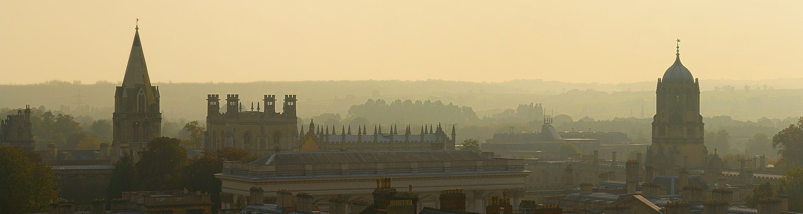

NSV 2018: 11th International Workshop on Numerical Software Verification 2018
July 18, 2018

- 2017, July 22-23, 2017, Heidelberg, Germanycollocated with CAV 2017
- 2016, July 17-18, 2016, Toronto, Ontario, Canada, collocated with CAV 2016
- 2015, April 13, 2015, Seattle, USA, collocated with CPSWeek 2015
- 2014, July 17-18, 2014, Vienna, Austria, collocated with Vienna Summer of Logic 2014
- 2013, April 8, 2013, Philadelphia, Pennsylvania, collocated with CPSWeek 2013
- 2012, July 7-8, 2012, Berkeley, California, collocated with CAV 2012
- 2011, July 14, 2011, Salt lake City, Utah, collocated with CAV 2011
- 2010, July 15, 2010, Edinburgh, UK, collocated with the Federated Logic Conference FLoC 2010
- 2009, April 16, 2009, San Fransisco, California collocated with CPSWeek 2009
- 2008, July 8, 2008, Princeton, New Jersey, collocated with CAV 2008